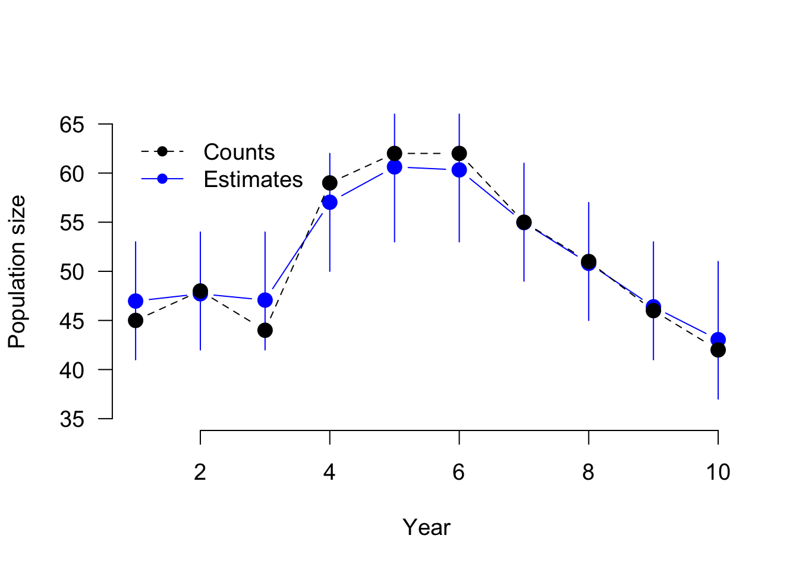

# Population counts (from years 1 to 10)
y <- c(45, 48, 44, 59, 62, 62, 55, 51, 46, 42)
# Capture-recapture data (in m-array format, from years 1 to 10)
m <- matrix(c(11, 0, 0, 0, 0, 0, 0, 0, 0, 70,
0, 12, 0, 1, 0, 0, 0, 0, 0, 52,
0, 0, 15, 5, 1, 0, 0, 0, 0, 42,
0, 0, 0, 8, 3, 0, 0, 0, 0, 51,
0, 0, 0, 0, 4, 3, 0, 0, 0, 61,
0, 0, 0, 0, 0, 12, 2, 3, 0, 66,
0, 0, 0, 0, 0, 0, 16, 5, 0, 44,
0, 0, 0, 0, 0, 0, 0, 12, 0, 46,
0, 0, 0, 0, 0, 0, 0, 0, 11, 71,
10, 2, 0, 0, 0, 0, 0, 0, 0, 13,
0, 7, 0, 1, 0, 0, 0, 0, 0, 27,
0, 0, 13, 2, 1, 1, 0, 0, 0, 14,
0, 0, 0, 12, 2, 0, 0, 0, 0, 20,
0, 0, 0, 0, 10, 2, 0, 0, 0, 21,
0, 0, 0, 0, 0, 11, 2, 1, 1, 14,
0, 0, 0, 0, 0, 0, 12, 0, 0, 18,
0, 0, 0, 0, 0, 0, 0, 11, 1, 21,
0, 0, 0, 0, 0, 0, 0, 0, 10, 26), ncol = 10, byrow = TRUE)
# Productivity data (from years 1 to 9)
J <- c(64, 132, 86, 154, 156, 134, 116, 106, 110)
R <- c(21, 28, 26, 38, 35, 33, 31, 30, 33) 13 Integrated Models
The following example example of a simple IPM (counts, capture-recapture, reproduction) is from Kéry, M., & Schaub, M. (2011). Bayesian population analysis using WinBUGS: a hierarchical perspective. Academic Press., chapter 11.3
Analysis of the model
#library(rjags)
library(R2jags)Loading required package: rjagsLoading required package: codaLinked to JAGS 4.3.0Loaded modules: basemod,bugs
Attaching package: 'R2jags'The following object is masked from 'package:coda':
traceplotmodel = "
model {
#-------------------------------------------------
# Integrated population model
# - Age structured model with 2 age classes:
# 1-year old and adult (at least 2 years old)
# - Age at first breeding = 1 year
# - Prebreeding census, female-based
# - All vital rates assumed to be constant
#-------------------------------------------------
#-------------------------------------------------
# 1. Define the priors for the parameters
#-------------------------------------------------
# Observation error
tauy <- pow(sigma.y, -2)
sigma.y ~ dunif(0, 50)
sigma2.y <- pow(sigma.y, 2)
# Initial population sizes
# Note that this part is different than in BUGS:
# 1. JAGS seems to be very sensitive to the choice of the prior distribution for the initial population sizes and of the choice of the observation model (priors)
# 2. Since the initial population sizes are used in binomial distributions, the numbers must be integers, otherwise JAGS does not run.
# The following specification seems to work very well and produces similar results as BUGS:
n1 ~ dnorm(25, tauy)T(0,) # 1-year
nad ~ dnorm(25, tauy)T(0,) # Adults
N1[1] <- round(n1)
Nad[1] <- round(nad)
# Survival and recapture probabilities, as well as productivity
for (t in 1:(nyears-1)){
sjuv[t] <- mean.sjuv
sad[t] <- mean.sad
p[t] <- mean.p
f[t] <- mean.fec
}
mean.sjuv ~ dunif(0, 1)
mean.sad ~ dunif(0, 1)
mean.p ~ dunif(0, 1)
mean.fec ~ dunif(0, 20)
#-------------------------------------------------
# 2. Derived parameters
#-------------------------------------------------
# Population growth rate
for (t in 1:(nyears-1)){
lambda[t] <- Ntot[t+1] / Ntot[t]
}
#-------------------------------------------------
# 3. The likelihoods of the single data sets
#-------------------------------------------------
# 3.1. Likelihood for population population count data (state-space model)
# 3.1.1 System process
for (t in 2:nyears){
mean1[t] <- f[t-1] / 2 * sjuv[t-1] * Ntot[t-1]
N1[t] ~ dpois(mean1[t])
Nad[t] ~ dbin(sad[t-1], Ntot[t-1])
}
for (t in 1:nyears){
Ntot[t] <- Nad[t] + N1[t]
}
# 3.1.2 Observation process
for (t in 1:nyears){
y[t] ~ dnorm(Ntot[t], tauy)
}
# 3.2 Likelihood for capture-recapture data: CJS model (2 age classes)
# Multinomial likelihood
for (t in 1:2*(nyears-1)){
m[t,1:nyears] ~ dmulti(pr[t,], r[t])
}
# m-array cell probabilities for juveniles
for (t in 1:(nyears-1)){
# Main diagonal
q[t] <- 1-p[t]
pr[t,t] <- sjuv[t] * p[t]
# Above main diagonal
for (j in (t+1):(nyears-1)){
pr[t,j] <- sjuv[t]*prod(sad[(t+1):j])*prod(q[t:(j-1)])*p[j]
} #j
# Below main diagonal
for (j in 1:(t-1)){
pr[t,j] <- 0
} #j
# Last column: probability of non-recapture
pr[t,nyears] <- 1-sum(pr[t,1:(nyears-1)])
} #t
# m-array cell probabilities for adults
for (t in 1:(nyears-1)){
# Main diagonal
pr[t+nyears-1,t] <- sad[t] * p[t]
# Above main diagonal
for (j in (t+1):(nyears-1)){
pr[t+nyears-1,j] <- prod(sad[t:j])*prod(q[t:(j-1)])*p[j]
} #j
# Below main diagonal
for (j in 1:(t-1)){
pr[t+nyears-1,j] <- 0
} #j
# Last column
pr[t+nyears-1,nyears] <- 1 - sum(pr[t+nyears-1,1:(nyears-1)])
} #t
# 3.3. Likelihood for productivity data: Poisson regression
for (t in 1:(nyears-1)){
J[t] ~ dpois(rho[t])
rho[t] <- R[t]*f[t]
}
}
"
# Bundle data
jags.data <- list(m = m, y = y, J = J, R = R, nyears = dim(m)[2], r = rowSums(m))
# Initial values
initial<- function(){list(mean.sjuv = runif(1, 0, 1), mean.sad = runif(1, 0, 1), mean.p = runif(1, 0, 1), mean.fec = runif(1, 0, 10), sigma.y = runif(1, 0, 1), n1 = rpois(1, 30), nad = rpois(1, 30))}
inits<-list(initial(),initial(),initial())
# Parameters monitored
parameters <- c("mean.sjuv", "mean.sad", "mean.p", "mean.fec", "N1", "Nad", "Ntot", "sigma2.y", "lambda")
# MCMC settings
ni <- 50000
nt <- 6
nb <- 25000
nc <- 3
# Call JAGS from R (BRT 2 min)
ipm <- jags(jags.data, inits, parameters, textConnection(model), n.chains = nc, n.thin = nt, n.iter = ni, n.burnin = nb, working.directory = getwd())module glm loadedCompiling model graph
Resolving undeclared variables
Allocating nodes
Graph information:
Observed stochastic nodes: 21
Unobserved stochastic nodes: 25
Total graph size: 536
Initializing model# Produce Fig. 11-4
par(cex = 1.2)
lower <- upper <- numeric()
for (i in 1:10){
lower[i] <- quantile(ipm$BUGSoutput$sims.list$Ntot[,i], 0.025)
upper[i] <- quantile(ipm$BUGSoutput$sims.list$Ntot[,i], 0.975)
}
plot(ipm$BUGSoutput$mean$Ntot, type = "b", ylim = c(35, 65), ylab = "Population size", xlab = "Year", las = 1, pch = 16, col = "blue", frame = F, cex = 1.5)
segments(1:10, lower, 1:10, upper, col = "blue")
points(y, type = "b", col = "black", pch = 16, lty = 2, cex = 1.5)
legend(x = 1, y = 65, legend = c("Counts", "Estimates"), pch = c(16, 16), col = c("black", "blue"), lty = c(2, 1), bty = "n")
Note that sometimes the model does not run, because of the estimation of the population growth rate (lambda). Presumably, awkward numbers such as 0 are produced during the initialising phase and then the ratio cannot be computed. There are two options: 1) just run the model again until it works, or 2) delete the calculation of lambda within the JAGS code and compute it afterwards based on the posterior samples of Ntot.